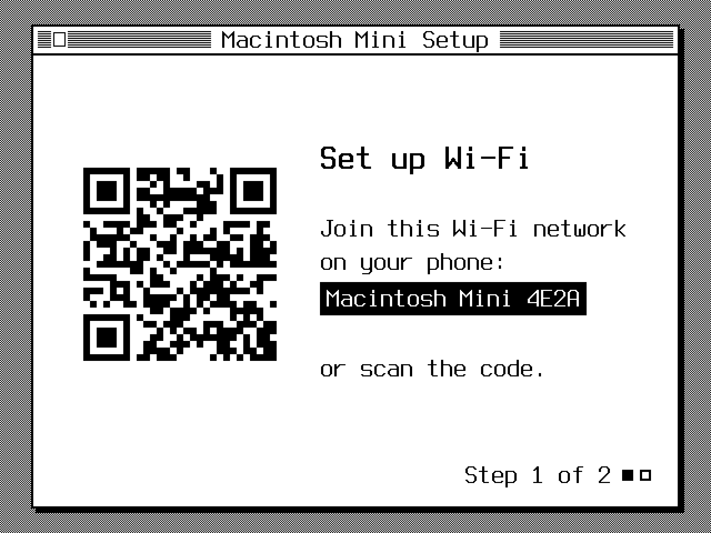
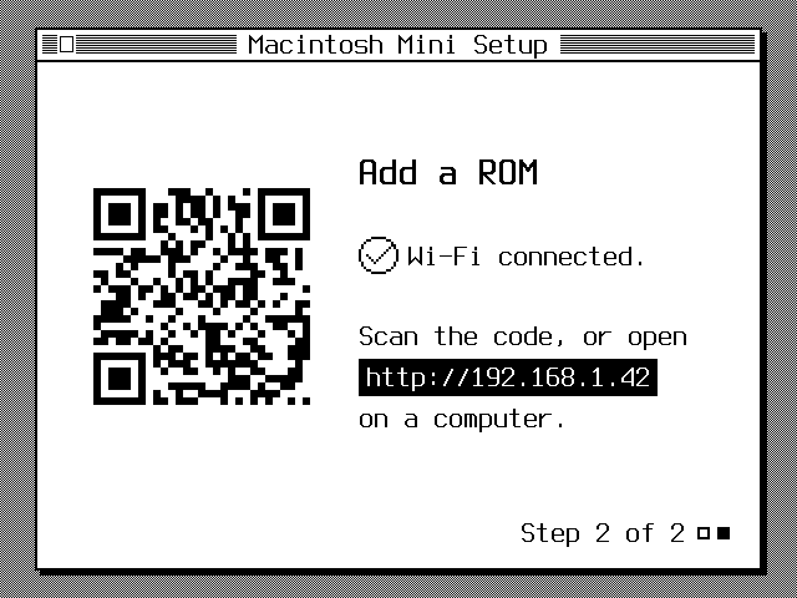
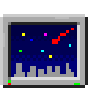
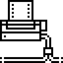

Your Mini is built and ready. Setting it up takes about ten minutes. You’ll need your phone, your Wi-Fi password and a Mac ROM file (more on that below).
Push the floppy disk into its slot. After a moment, the screen shows Set up Wi-Fi.
On your phone, join the Wi-Fi network shown on the screen: Macintosh Mini followed by four letters and numbers. You can also scan the code with your phone’s camera.
A setup page opens. Choose your home Wi-Fi, type its password, and pick a password for the Mini. You’ll only need that one for advanced things later. Then tap Connect.
If the page doesn’t open, go to 10.42.0.1 in your phone’s browser. If the screen says Couldn’t join, check your Wi-Fi password and try again. The Mini needs 2.4 GHz Wi-Fi, which almost every home router has.

Once it’s on your Wi-Fi, the screen shows a code and an address. Scan the code with your phone, or type the address into a browser on your computer.
Upload your ROM file (a .zip is fine), or paste its download link. The Mini checks it and starts Mac OS. Listen for the chime!
If it comes back to this screen, that ROM didn’t work. Reload the page and try another.

The Mac emulator needs a ROM file to function. Since these files are copyrighted and owned by Apple, I haven’t included one.
Redundant Robot’s emulator guide explains which one to use and where to find it. The Performa ROM works best. redundantrobot.com/sheepshaver
Turning it off. Press the right button, wait about 20 seconds, then pull out the floppy.
Restarting. Press the left button. It’s also the fix if Mac OS ever freezes.
Brightness. Turn the dial. The screen dims after sunset and turns off late at night. The dial wakes it.
Charging. Plug in a USB-C cable. The Mini has a very small internal battery, but I recommend using a reliable USB-C charging brick instead.
New Wi-Fi. If you move, or change your Wi-Fi, hold the left button for 10 seconds and do step 2 again.
Keyboard and mouse. On its own, the Mini is a desk clock and screen saver. To use Mac OS, plug a USB keyboard and mouse into the port on the back, if yours has one.
Mac OS 8.1 from 1998, set up and ready, with:
| iCab | Web browser. It opens a page of sites that still work on old Macs. | |
|---|---|---|
| MR Browser | Finds and downloads old Mac software from Macintosh Repository. | |
 | After Dark | Screen saver: flying toasters and friends after 5 minutes. |
| Big Maclock | A big desk clock. | |
| StuffIt Expander | Opens .sit files and other compressed downloads. | |
| Disk Copy | Opens old Mac disk image files. | |
 | ImageWriter | Prints to an AppleTalk ImageWriter, like an AirWriter. |
None of this is needed day to day. Under Mac OS, the Mini runs Raspberry Pi OS, which you can reach from a computer on the same Wi-Fi.
Its name is macintosh-mini- plus the four characters from its Wi-Fi network, like macintosh-mini-4e2a. The username is mac, and the password is the one from step 2. If the name doesn’t work (some routers block .local names), use the address from step 3.
Log in from Terminal, or PowerShell on Windows:
ssh mac@macintosh-mini-4e2a.local
Copy files with an app like Cyberduck or FileZilla. Choose SFTP (not FTP), and use the same name, username and password.
Use a different disk image by copying it into the home folder and deleting the old one, then pressing the left button. Disks with System 7.5 to Mac OS 8.1 work (.hda, .dsk, .img or .hfv). The original is at archive.org/details/macos-8.1-basilisk-ii.
Get updates by logging in and running:
curl -fsSL https://raw.githubusercontent.com/wr/macintosh-mini/main/setup.sh | bash
A soft hum on battery is normal for this board, and quieter with the brightness turned down.